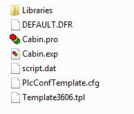
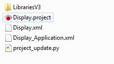

To avoid problems in the System Export, the project directory structure should not be changed.
To change the project location, the whole project directory should be moved: the entire project directory that has the same name with .net file.
|
|
To avoid problems in the System Export, the project directory structure should not be changed.
To change the project location, the whole project directory should be moved: the entire project directory that has the same name with .net file.
|
MultiTool Creator automatically creates a directory for each project to the given project path (Settings). The project directory with already created CODESYS projects for devices contains the following files:
|
{MultiTool CreatorProjectName}.mtproject |
MultiTool Creator project file |
|
*.mtarchive |
MultiTool Creator project archive file |
|
{NetworkName}.dbc |
Vector database file for each network : a description of the CAN network, connected devices, CAN messages and signals.
|
|
{NetworkName}.csv |
Project parameter file for each network |
|
{NetworkName}.csf |
CANmoon setup file for each network. This file is used when a network is opened in CANmoon |
|
{DeviceName} folder |
a subdirectory for each device, which contains CODESYS project files |
|
Media |
Temporary directory for project files. For MultiTool Creator's internal use. |
|
~$projectLock.mtproject |
Hidden read-only file for MultiTool Creator's internal use |
|
{MultiTool CreatorProjectName}.gw |
CODESYS 3.5 CAN gateway configuration file. Note! Generated only when MultiTool Creator project contains CODESYS 3.5 devices connected to network. |
For example, a MultiTool Creator project called ExampleProject includes two devices: Display and Cabin. The images below present the difference between the CODESYS 2.3 (on left) and 3.5 (on right) directory structures. More detailed information about the files can be found from the following tables.


|
Filename / Type |
Description |
|
Libraries |
The directory contains - project libraries that are defined in MultiTool Creator Library Manager - a text file LibraryVersions that lists all used libraries and their versions for MultiTool Creator Library Manager
|
|
Backup |
Opening and converting a project made with older MultiTool Creator makes a directory Backup. The directory includes the old project version (before conversion).
|
|
{Device name}.pro |
A device specific CODESYS project file. CODESYS project is created by MultiTool Creator.
|
|
{Device name}.exp |
EXP file includes all definitions made in MultiTool Creator. The EXP file can be manually imported to CODESYS by - CODESYS Project > Import or - CODESYS Edit > Macros > Import MultiTool Creator macro (Updating MultiTool Creator Configurations to CODESYS Project)
|
|
script.dat |
Script file that is used to create, open or update a CODESYS project for the selected device, depending on the user's previous selection. (Quick Start Guide)
|
|
{Device type}.tpl |
Template CODESYS project that contains the correct target settings for the selected device.
|
|
Filename / Type |
Description |
|
LibrariesV3 |
The directory includes - project libraries - CODESYS device description file that defines the required library versions - a text file LibraryVersions that lists all used libraries and their versions for Library Manager
|
|
{Device name}.project |
A CODESYS project file that includes all definitions made in MultiTool Creator.
|
|
{Device name}.xml |
PLCopen XML file that includes all definitions made in MultiTool Creator. Used for updating the project by Python script.
|
|
{Device name}_Application.xml |
PLCopen XML file that includes all definitions made in MultiTool Creator. Used for creating the project by Python script.
|
|
project_update.py |
Python script file for updating the project in CODESYS (Updating MultiTool Creator Configurations to CODESYS Project).
|
Epec Oy reserves all rights for improvements without prior notice.
Source file topic200001.htm
Last updated 25-Jun-2025